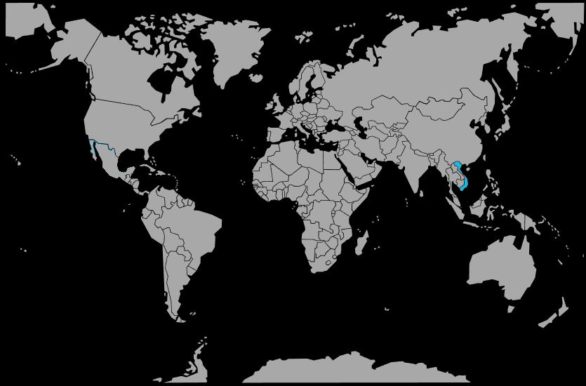

Systématique
- Ordre : Cypriniformes
- Famille : Gastromyzontidae
- Genre : Sewellia
- Espèce : Sewellia lineolata
Sewellia lineolata est une petite loche rhéophile asiatique au corps aplati, adaptée à la vie dans les torrents rapides, très appréciée pour sa silhouette rappelant une petite raie.
Elle mesure en général 5 à 7 cm et se maintient en groupe dans des aquariums imitant un cours d’eau, avec de nombreuses pierres lisses recouvertes d’algues et une forte oxygénation.
C’est une espèce pacifique mais active, qui passe beaucoup de temps fixée sur les surfaces grâce à ses nageoires modifiées, se déplaçant en « grimpant » sur les roches dans le courant.
Elle peut vivre en communautaire avec des poissons calmes aimant l’eau fraîche et bien brassée, à condition de lui offrir suffisamment de cachettes et de surfaces rocheuses à brouter.
Mode : pondeur sur substrat; la ponte a lieu dans du gravier grossier ou entre les interstices des pierres, où les œufs sont déposés et protégés mécaniquement.
Les adultes ne harcèlent généralement pas les alevins, qui trouvent leur nourriture dans le biofilm et les micro‑organismes présents entre les roches d’un bac mature.
Dimorphisme sexuel : les mâles présentent souvent des marges plus développées sur les nageoires pectorales et parfois une silhouette légèrement plus trapue que les femelles.
Espérance de vie : 3 à 5 ans en aquarium bien entretenu, avec eau fraîche, très oxygénée et alimentation adaptée.
Sewellia lineolata provient de rivières claires et rapides d’Asie (notamment Vietnam), avec un substrat rocheux, une forte turbulence et une eau fraîche et très oxygénée.
Répartition
Origine naturelle :
- Asie du Sud‑Est, principalement Vietnam.
- Rivières de montagne et ruisseaux à courant rapide.
L’espèce est associée aux zones rhéophiles, sur les roches directement exposées au courant et colonisées par le biofilm.
Paramètres de maintenance
Température : 18 à 24 °C, idéalement autour de 20–22 °C.
pH : 6,5 à 7,5, de légèrement acide à neutre.
GH : 5 à 15 °dGH, eau douce à moyennement dure.
Courant : fort à très fort, avec une oxygénation maximale et une filtration puissante.
Volume conseillé : au moins 80 à 100 L pour un groupe, avec grande surface au sol et roches.
Régime alimentaire
Régime : principalement herbivore‑détritivore; elle broute le biofilm, les algues et les petits invertébrés associés sur les surfaces rocheuses.
En aquarium, on propose des pastilles pour poissons de fond, des aliments riches en spiruline, des légumes pochés et, ponctuellement, de petites proies congelées.
Un bac mature, riche en biofilm naturel, est fortement recommandé pour couvrir ses besoins alimentaires à long terme.